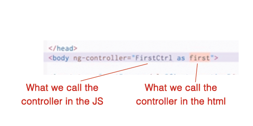

To add a controller to the doc, add ng-controller to the body as an attr like this:
Put a script tag in the header called angular.module("name"). The "name" needs to match up with how we're calling it in the body tag attr.
To understand more, look at the comments in the js above - this is easier for me.